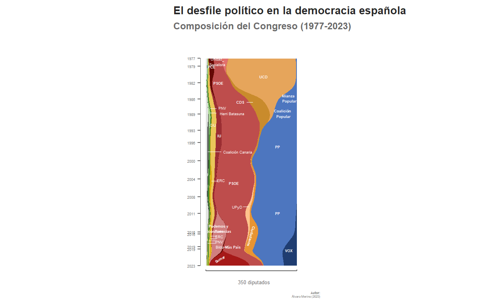
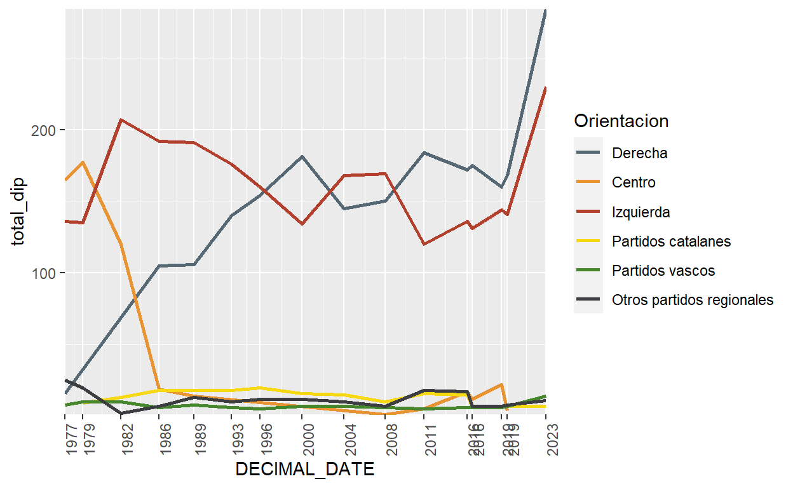
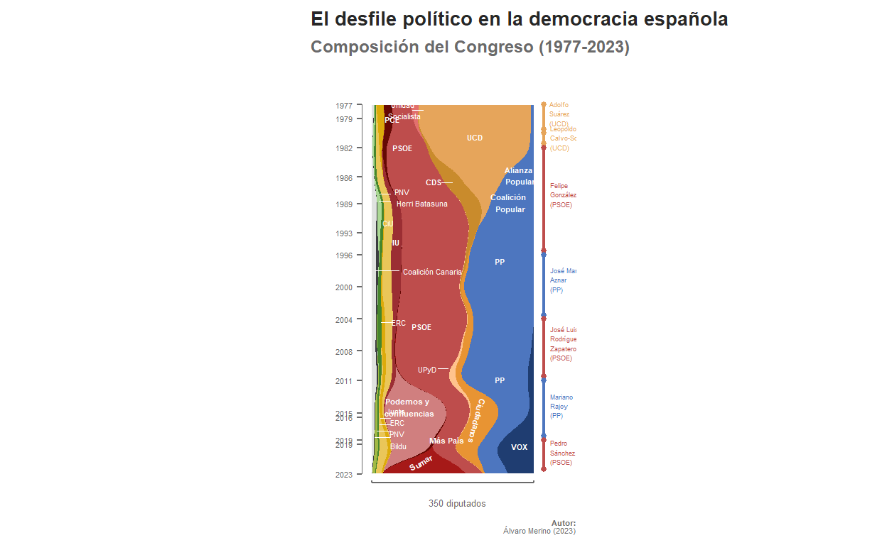
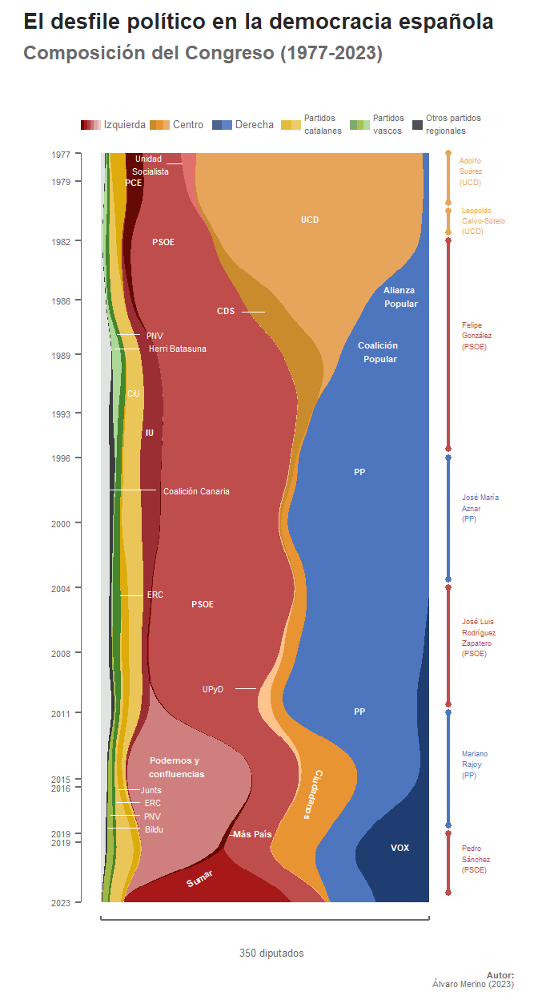
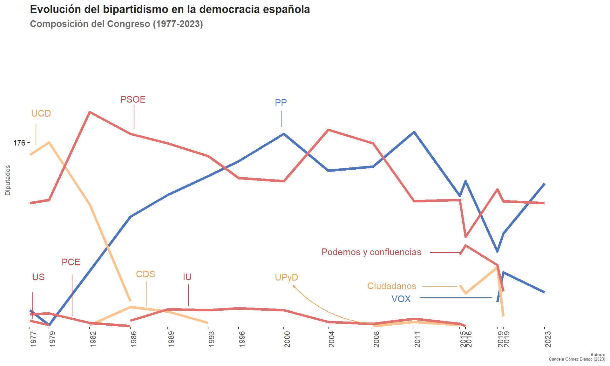
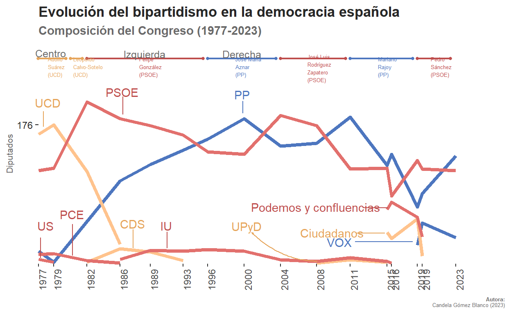
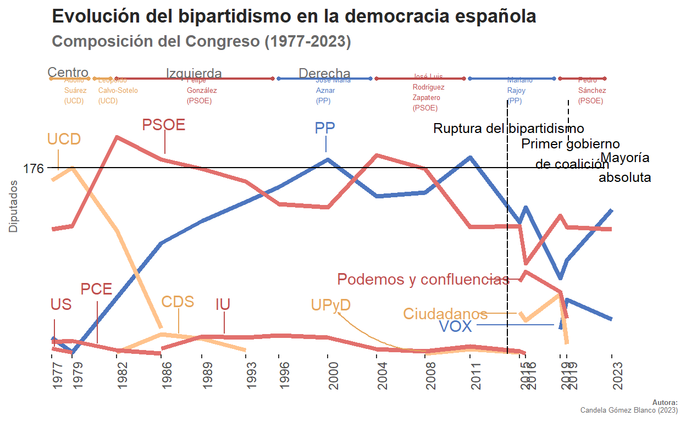

Introduction
This project is based on the graph posted in the article “El desfile político en la democracia española” (The Political Parade in Spanish Democracy), published by El Orden Mundial in 2023. In this piece, the authors delve into the evolution of the Spanish Congress of Deputies throughout its democratic history. Specifically, they analyze the distribution of seats among major political parties and ideologies, emphasizing the development of bipartisanship from the 1977 elections to the present.
The article includes the following graph, which effectively illustrates this evolution. At a glance, it becomes evident that, since the first democratic elections, the composition of the Congress has been characterized by a dominant two-party system and consistent support for peripheral nationalist parties. This trend is largely influenced by an electoral system that favors major parties in smaller constituencies, to the detriment of minority formations at the national level.
I encountered this graph worth replicating, being a comprehensive representation of the data. Given that it seemed to encapsulate a significant amount of information effectively, suggesting improvements could pose a considerable challenge.
Preparing the data base
Collecting the data
Preparing the database involved collecting data on the deputies who have served in Congress over the years. I obtained this information from the official website of the Congress of Deputies (https://www.congreso.es/es/opendata/diputados) by downloading the Excel files corresponding to the 15 legislatures. Combining the data from each of these legislatures into a unified Excel file, I stored it in this project’s Git-Hub folder. The subsequent task involved cleaning and preparing this database.
Cleaning the database
Cleaning the database involved making adjustments over the original dataset, which comprised 6470 rows, each representing an individual deputy in Congress, and 9 columns containing specific deputy-related information.
The primary task, and the most challenging aspect of the entire assignment, was determining the characteristics our database needed to have to enable the creation of our graph. This involved identifying the necessary variables and how the data should be organized. Our interest did not lie in individualized deputy information, but rather in aggregating deputies based on their political affiliations. Additionally, we needed to ascertain the distribution of deputies for each year in which general elections were held. Once we clarified our objective, these were the next steps and encountered difficulties:
Selecting the essential variables was required to achieve this goal. That is, we needed the name of the deputies (for an individualized register of each record), the political party to which each deputy belonged, and the start and end dates of their tenure as deputies.
It’s worth noting that some deputies conclude their tenure before the legislature ends, while others assume office midway through the term. Consequently, none of the available variables in the original database served our graph’s purpose. To address this, after determining the precise dates of each general election, a new column labeled “Elections” was created, narrowing down the dates to those in which general elections were celebrated.
Furthermore, another variable called “num_deputies” was established. This variable calculated the cumulative count of deputies per political party. Each new enrollment contributed +1 in the most recent election, while each termination date deducted -1 in the subsequent legislature, enabling a comprehensive tally of deputies per political party over time.
clean_data <- graph_db |>
# Selecting the variables of interest and converting to date
select(NOMBRE, FORMACIONELECTORAL, FECHAALTA, FECHABAJA) |>
mutate(across(c(FECHAALTA, FECHABAJA), ymd)) |>
# Removing duplicate values (changes in parliamentary groups)
distinct() |>
# Pivoting the date, sorting, and converting to year, removing NAs
tidyr::pivot_longer(c(FECHAALTA, FECHABAJA), values_to = "FECHA") |>
arrange(FECHA) |>
mutate(
Elections = case_when(
FECHA >= as.Date("1977-06-15") & FECHA < as.Date("1979-03-01") &
name == "FECHAALTA" ~ as.Date("1977-06-15"),
FECHA >= as.Date("1977-06-15") & FECHA < as.Date("1979-03-01") &
name == "FECHABAJA" ~ as.Date("1979-03-01"),
FECHA >= as.Date("1979-03-01") & FECHA < as.Date("1982-10-28") &
name == "FECHAALTA" ~ as.Date("1979-03-01"),
FECHA >= as.Date("1979-03-01") & FECHA < as.Date("1982-10-28") &
name == "FECHABAJA" ~ as.Date("1982-10-28"),
FECHA >= as.Date("1982-10-28") & FECHA < as.Date("1986-06-22") &
name == "FECHAALTA" ~ as.Date("1982-10-28"),
FECHA >= as.Date("1982-10-28") & FECHA < as.Date("1986-06-22") &
name == "FECHABAJA" ~ as.Date("1986-06-22"),
FECHA >= as.Date("1986-06-22") & FECHA < as.Date("1989-10-29") &
name == "FECHAALTA" ~ as.Date("1986-06-22"),
FECHA >= as.Date("1986-06-22") & FECHA < as.Date("1989-10-29") &
name == "FECHABAJA" ~ as.Date("1989-10-29"),
FECHA >= as.Date("1989-10-29") & FECHA < as.Date("1993-06-06") &
name == "FECHAALTA" ~ as.Date("1989-10-29"),
FECHA >= as.Date("1989-10-29") & FECHA < as.Date("1993-06-06") &
name == "FECHABAJA" ~ as.Date("1993-06-06"),
FECHA >= as.Date("1993-06-06") & FECHA < as.Date("1996-03-03") &
name == "FECHAALTA" ~ as.Date("1993-06-06"),
FECHA >= as.Date("1993-06-06") & FECHA < as.Date("1996-03-03") &
name == "FECHABAJA" ~ as.Date("1996-03-03"),
FECHA >= as.Date("1996-03-03") & FECHA < as.Date("2000-03-12") &
name == "FECHAALTA" ~ as.Date("1996-03-03"),
FECHA >= as.Date("1996-03-03") & FECHA < as.Date("2000-03-12") &
name == "FECHABAJA" ~ as.Date("2000-03-12"),
FECHA >= as.Date("2000-03-12") & FECHA < as.Date("2004-03-14") &
name == "FECHAALTA" ~ as.Date("2000-03-12"),
FECHA >= as.Date("2000-03-12") & FECHA < as.Date("2004-03-14") &
name == "FECHABAJA" ~ as.Date("2004-03-14"),
FECHA >= as.Date("2004-03-14") & FECHA < as.Date("2008-03-09") &
name == "FECHAALTA" ~ as.Date("2004-03-14"),
FECHA >= as.Date("2004-03-14") & FECHA < as.Date("2008-03-09") &
name == "FECHABAJA" ~ as.Date("2008-03-09"),
FECHA >= as.Date("2008-03-09") & FECHA < as.Date("2011-11-20") &
name == "FECHAALTA" ~ as.Date("2008-03-09"),
FECHA >= as.Date("2008-03-09") & FECHA < as.Date("2011-11-20") &
name == "FECHABAJA" ~ as.Date("2011-11-20"),
FECHA >= as.Date("2011-11-20") & FECHA < as.Date("2015-12-20") &
name == "FECHAALTA" ~ as.Date("2011-11-20"),
FECHA >= as.Date("2011-11-20") & FECHA < as.Date("2015-12-20") &
name == "FECHABAJA" ~ as.Date("2015-12-20"),
FECHA >= as.Date("2015-12-20") & FECHA < as.Date("2016-06-26") &
name == "FECHAALTA" ~ as.Date("2015-12-20"),
FECHA >= as.Date("2015-12-20") & FECHA < as.Date("2016-06-26") &
name == "FECHABAJA" ~ as.Date("2016-06-26"),
FECHA >= as.Date("2016-06-26") & FECHA < as.Date("2019-04-28") &
name == "FECHAALTA" ~ as.Date("2016-06-26"),
FECHA >= as.Date("2016-06-26") & FECHA < as.Date("2019-04-28") &
name == "FECHABAJA" ~ as.Date("2019-04-28"),
FECHA >= as.Date("2019-04-28") & FECHA < as.Date("2019-11-10") &
name == "FECHAALTA" ~ as.Date("2019-04-28"),
FECHA >= as.Date("2019-04-28") & FECHA < as.Date("2019-11-10") &
name == "FECHABAJA" ~ as.Date("2019-11-10"),
FECHA >= as.Date("2019-11-10") & FECHA < as.Date("2023-07-23") &
name == "FECHAALTA" ~ as.Date("2019-11-10"),
FECHA >= as.Date("2019-11-10") & FECHA < as.Date("2023-07-23") &
name == "FECHABAJA" ~ as.Date("2023-07-23"),
FECHA >= as.Date("2023-07-23") &
name == "FECHAALTA" ~ as.Date("2023-07-23"),
FECHA >= as.Date("2023-07-23") &
name == "FECHABAJA" ~ as.Date("2023-07-23")
)
) |>
na.omit() |>
# Cumulative sum by electoral formation: +1 for STARTDATE, -1 for ENDDATE
group_by(FORMACIONELECTORAL) |>
mutate(num_deputies = cumsum(if_else(name == "FECHAALTA", 1, -1))) |>
# We keep the last value per date and party
select(Elections, FORMACIONELECTORAL, num_deputies) |>
group_by(Elections, FORMACIONELECTORAL) |>
slice_tail() |>
# Removing transient records, where the total sum per date is less than 340
group_by(Elections) |>
filter(sum(num_deputies) > 300) |>
ungroup() |>
# Removing zeros
filter(num_deputies > 0)Within the electoral formations, there were inconsistencies in the representation of party names. For instance, parties like VOX, Junts, or CiU, among others, were written in different formats regarding capitalization. Additionally, some parties were represented by their acronyms (such as “UP”) in some instances and by their full names in others for (“Unidas Podemos”). These variations needed standardization. Moreover, there were various coalitions of parties that, for graphing purposes, needed to be considered as deputies of only one party. For instance, the acronym “PSOE-A” should be counted as deputies of the PSOE party. To streamline this process and avoid addressing each party individually, the ‘str_detect’ function was used. However, certain party names shared letters and the order of some acronyms, such as ‘UP’ and ‘UPyD.’ Therefore, specific recategorizations were established without employing the previously mentioned function.
clean_data <- clean_data |>
mutate(recat = case_when(
FORMACIONELECTORAL == "CD" ~ "UCD",
FORMACIONELECTORAL == "UP" ~ "PODEMOS",
FORMACIONELECTORAL == "CP" ~ "PP",
FORMACIONELECTORAL == "PSUC" ~ "Otros catalanes",
str_detect(FORMACIONELECTORAL, "CIU|CiU|CDC|UDC") ~ "CiU",
str_detect(FORMACIONELECTORAL, "Junts|JUNTS") ~ "Junts",
str_detect(FORMACIONELECTORAL, "ERC") ~ "ERC",
str_detect(FORMACIONELECTORAL, "PODEMOS|POD|EN COMÚ|ECP") ~ "PODEMOS",
str_detect(FORMACIONELECTORAL, "MÁS PAÍS") ~ "Más País",
str_detect(FORMACIONELECTORAL, "PCE") ~ "PCE",
str_detect(FORMACIONELECTORAL, "IU") ~ "IU",
str_detect(FORMACIONELECTORAL, "PSOE|PSE|PSC") ~ "PSOE",
str_detect(FORMACIONELECTORAL, "US") ~ "US",
str_detect(FORMACIONELECTORAL, "SUMAR") ~ "SUMAR",
str_detect(FORMACIONELECTORAL, "Cs") ~ "Cs",
str_detect(FORMACIONELECTORAL, "CDS") ~ "CDS",
str_detect(FORMACIONELECTORAL, "UCD") ~ "UCD",
str_detect(FORMACIONELECTORAL, "UPyD") ~ "UPyD",
str_detect(FORMACIONELECTORAL, "AP|PP") ~ "PP",
str_detect(FORMACIONELECTORAL, "Vox|VOX") ~ "VOX",
str_detect(FORMACIONELECTORAL, "PNV") ~ "PNV",
str_detect(FORMACIONELECTORAL, "HB") ~ "HB",
str_detect(FORMACIONELECTORAL, "EH Bildu") ~ "EH Bildu",
str_detect(FORMACIONELECTORAL, "CC") ~ "CC",
TRUE ~ "Otros"
))Definite graph data base
To proactively manage potential errors I might face, I opted to create a new database at this stage, which will be the definitive one used for our graph.
I organized the data by grouping it based on the ‘Elections’ and ‘recat’ columns. Then, I summarized the data by calculating the total number of deputies (‘num_deputies’ column) for each category and stored this information in a new column named ‘total_deputies’.
Two crucial adjustments were necessary to ensure the graph’s accurate representation:
Transforming the ‘recat’ column into a factor specifying a certain order for its levels. This order was structured to mirror the original graph’s arrangement: regional parties on the left, followed by a progressive ideological sequence from left-leaning parties to right-leaning formations.
Typically, graphs displaying an evolving trend have years or dates plotted along the X-axis. However, our graph’s design was oriented differently with dates on the Y-axis. Attempting to flip the graph using ‘coord_flip’ resulted in an inverted orientation, placing the most recent years at the bottom. To resolve this, I converted the dates into decimal values, facilitating the reversal of their order. This adjustment ensured that the ticks representing election dates on the Y-axis were proportionally spaced according to the time between each election.
#Creating the final graph database
graph_base <- clean_data |>
group_by(Elections, recat) |>
summarise(total_deputies = sum(num_deputies)) |>
ungroup()
#Ordering the political parties by their ideology
graph_base$recat <- factor(graph_base$recat,
levels = c("VOX", "PP", "Cs", "UCD", "CDS",
"UPyD", "US", "PSOE", "SUMAR",
"Más País", "PODEMOS", "PCE",
"IU", "Otros catalanes", "CiU",
"ERC", "Junts", "PNV", "HB",
"EH Bildu", "CC", "Otros"))
#Adding the DECIMAL_DATE column
graph_base$DECIMAL_DATE <- decimal_date(graph_base$Elections)
fechas_unicas <- unique(graph_base$DECIMAL_DATE)Replication: stream_graph
The graph we aim to replicate is a stream graph. These visualizations demonstrate changes in the composition and distribution of multiple variables over time. They prove useful in depicting time series data and how the distribution of different categories or groups within these series evolves over time. In this instance, it’s a proportional stream graph, meaning the width of the bands varies based on each category’s proportion at a specific moment in time. Hence, although the number of deputies in the Congress can fluctuate between 300 and 400, our graph will have a constant width, because it considers the proportion of deputies from each electoral party concerning the total number of deputies at any given time.
The following code accomplishes the following:
Creates the proportional flow graph using the “ggplot2” package.
Flips the graph to make it vertical.
Adjusts the axis limits to accommodate annotations.
Establishes themes and styles, refining the appearance of the graph, including titles, subtitles, and axis formatting to mimic the original graph.
#Loading needed libraries
library(ggstream)
library(ggplot2)
# Creating a ggplot object with the new database
graph <- ggplot(data = graph_base, aes(x = DECIMAL_DATE, y = total_deputies)) +
# Adding a stream plot with recat as fill and proportional type
geom_stream(aes(fill = recat), type = "proportional") +
# Formatting y-axis labels as percentages
scale_y_continuous(labels = scales::percent_format(), breaks = NULL) +
# Formatting x-axis labels and reversing the scale
scale_x_continuous(trans = "reverse",
breaks = fechas_unicas,
labels = function(x) floor(x)) +
# Flipping coordinates to create a vertical plot
coord_flip(ylim = c(0, 1.2),
xlim = c(2023.556, 1975)) +
# Adding axis labels and titles
labs(x = "", y = "350 diputados", fill = "Orientación ideológica",
title = "**El desfile político en la democracia española**",
subtitle = "**Composición del Congreso (1977-2023)**",
caption = paste("**Autor:**", "Álvaro Merino (2023)", sep = "<br>")) +
# Modifying the appearance of various plot elements using theme settings
theme(
plot.title = ggtext::element_markdown(size = 10, color = "#272727"),
plot.title.position = "plot",
plot.subtitle = ggtext::element_markdown(size = 9, color = "#6A6A6A"),
plot.caption = ggtext::element_markdown(size = 4, color = "#6A6A6A"),
axis.ticks.y = element_line(size = 0.5, color = "#6A6A6A"),
axis.line.x = element_blank(),
axis.line.y = element_blank(),
axis.text.x = element_blank(),
axis.text.y = element_text(size = 4, color = "#6A6A6A"),
axis.title.x = element_text(size = 5, color = "#6A6A6A", hjust = 0.43),
panel.grid.major.x = element_blank(),
aspect.ratio = 4/2,
panel.border = element_blank(),
panel.background = element_blank(),
legend.position = "none"
)
graph
Setting the actual colors
To precisely establish the same colors as the target graph, I utilized the eyedropper tool available in Paint to extract the exact code for each color. Then, I manually assigned specific colors to each of the categories represented in the graph.
graph <- graph +
scale_fill_manual(values = c(
"VOX" = "#1F3D71",
"PP" = "#4D76BF",
"Cs" = "#E89433",
"UCD" = "#E6A55B",
"CDS" = "#C98B2C",
"UPyD" = "#FFC38D",
"US" = "#E2706D",
"PSOE" = "#BE4D4C",
"SUMAR" = "#A61918",
"PODEMOS" = "#D07F7F",
"PCE" = "#650904",
"Más País" = "#650904",
"IU" = "#9B2E33",
"CiU" = "#EAC659",
"Junts" = "#EAC659",
"ERC" = "#DDAB0B",
"Otros catalanes" = "#DDAB0B",
"PNV" = "#46862C",
"HB" = "#ABD894",
"EH Bildu" = "#A1B944",
"CC" = "#3B3D40",
"Otros" = "#E0E3E0"
))
graph
Annotations
The chosen graph required numerous annotations to provide a comprehensive representation. To achieve this, the ggannotate library was employed. This library significantly simplifies the process of placing labels and annotations on ggplot2-generated graphs. One of its notable advantages is its capability to swiftly and easily insert labels. With ggannotate, we can position labels precisely which expedites the process while ensuring accurate placement of annotations.
Party labels
The initial step involved establishing labels linked to the names of electoral formations and their respective segments.
# remotes::install_github("mattcowgill/ggannotate")
library(ggannotate)
#For adding each annotation run: ggannotate(graph)
graph <- graph +
geom_text(
data = data.frame(x = 1981.458, y = 0.638, label = "UCD"),
mapping = aes(x = x, y = y, label = label),
size = 1.5, colour = "white", fontface = 2, inherit.aes = FALSE) +
geom_text(
data = data.frame(x = 2020.116, y = 0.912, label = "VOX"),
mapping = aes(x = x, y = y, label = label),
size = 1.5, colour = "white", fontface = 2, inherit.aes = FALSE) +
geom_text(
data = data.frame(x = 1986.226, y = 0.912, label = "Alianza \n Popular"),
mapping = aes(x = x, y = y, label = label),
size = 1.5, colour = "white", fontface = 2, inherit.aes = FALSE) +
geom_text(
data = data.frame(x = 1989.632, y = 0.850, label = "Coalición \n Popular"),
mapping = aes(x = x, y = y, label = label),
size = 1.5, colour = "white", fontface = 2, inherit.aes = FALSE) +
geom_text(
data = data.frame(x = 2011.771, y = 0.7889, label = "PP"),
mapping = aes(x = x, y = y, label = label),
size = 1.5, colour = "white", fontface = 2, inherit.aes = FALSE) +
geom_text(
data = data.frame(x = 1997.00, y = 0.788, label = "PP"),
mapping = aes(x = x, y = y, label = label),
size = 1.5, colour = "white", fontface = 2, inherit.aes = FALSE) +
geom_text(
data = data.frame(x = 1982.820, y = 0.19, label = "PSOE"),
mapping = aes(x = x, y = y, label = label),
size = 1.5, colour = "white", fontface = 2, inherit.aes = FALSE) +
geom_text(
data = data.frame(x = 2005.130, y = 0.310, label = "PSOE"),
mapping = aes(x = x, y = y, label = label),
size = 1.5, colour = "white", fontface = 2, inherit.aes = FALSE) +
geom_text(
data = data.frame(x = 1994.571, y = 0.15, label = "IU"),
mapping = aes(x = x, y = y, label = label),
size = 1.5, colour = "white", fontface = 2, inherit.aes = FALSE) +
geom_text(
data = data.frame(x = 1979.2, y = 0.1, label = "PCE"),
mapping = aes(x = x, y = y, label = label),
size = 1.5, colour = "white", fontface = 2, inherit.aes = FALSE) +
geom_text(
data = data.frame(x = 2021.989, y = 0.3, label = "Sumar"),
mapping = aes(x = x, y = y, label = label),
size = 1.5, angle = 30L, colour = "white",
fontface = 2, inherit.aes = FALSE)+
geom_text(
data = data.frame(x = 2015.177, y = 0.23,
label = "Podemos y \n confluencias"),
mapping = aes(x = x, y = y, label = label),
size = 1.5, colour = "white", fontface = 2, inherit.aes = FALSE)+
geom_text(
data = data.frame(x = 2019.321, y = 0.465, label = "Más País"),
mapping = aes(x = x, y = y, label = label),
size = 1.5, colour = "white", fontface = 2, inherit.aes = FALSE)+
annotate("segment", x = 2019.4, xend = 2019.4, y = 0.41, yend = 0.39,
color = "white", size = 0.1) +
geom_text(
data = data.frame(x = 1987.078, y = 0.381, label = "CDS"),
mapping = aes(x = x, y = y, label = label),
size = 1.5, colour = "white", fontface = 2, inherit.aes = FALSE) +
annotate("segment", x = 1987.2, xend = 1987.2, y = 0.43, yend = 0.50,
color = "white", size = 0.1)+
geom_text(
data = data.frame(x = 1978.1, y = 0.15, label = "Unidad \n Socialista"),
mapping = aes(x = x, y = y, label = label),
size = 1.5, colour = "white", inherit.aes = FALSE)+
annotate("segment", x = 1978.1, xend = 1978.1, y = 0.2, yend = 0.25,
color = "white", size = 0.1) +
geom_text(
data = data.frame(x = 2016.938, y = 0.65, label = "Ciudadanos"),
mapping = aes(x = x, y = y, label = label),
size = 1.5, angle = -105L, colour = "white",
fontface = 2, inherit.aes = FALSE)+
geom_text(
data = data.frame(x = 2010.388, y = 0.343, label = "UPyD"),
mapping = aes(x = x, y = y, label = label),
size = 1.5, colour = "white", inherit.aes = FALSE) +
annotate("segment", x = 2010.388, xend = 2010.388, y = 0.41, yend = 0.475,
color = "white", size = 0.1)+
geom_text(
data = data.frame(x = 1989, y = 0.139,
label = "PNV \n Herri Batasuna"),
mapping = aes(x = x, y = y, label = label),
size = 1.5, hjust = 0L, colour = "white", inherit.aes = FALSE) +
annotate("segment", x = 1988.6, xend = 1988.6, y = 0.05, yend = 0.12,
color = "white", size = 0.1) +
annotate("segment", x = 1989.5, xend = 1989.5, y = 0.043, yend = 0.12,
color = "white", size = 0.1) +
geom_text(
data = data.frame(x = 1998.173, y = 0.192, label = "Coalición Canaria"),
mapping = aes(x = x, y = y, label = label),
size = 1.5, hjust = 0L, colour = "white", inherit.aes = FALSE) +
annotate("segment", x = 1998.18, xend = 1998.18, y = 0.024, yend = 0.17,
color = "white", size = 0.1) +
geom_text(
data = data.frame(x = 2004.546, y = 0.166, label = "ERC"),
mapping = aes(x = x, y = y, label = label),
size = 1.5, colour = "white", inherit.aes = FALSE)+
annotate("segment", x = 2004.65, xend = 2004.65, y = 0.06, yend = 0.13,
color = "white", size = 0.1)+
geom_text(
data = data.frame(x = 2017.8, y = 0.16,
label = "Junts \n ERC \n PNV \n Bildu"),
mapping = aes(x = x, y = y, label = label),
size = 1.5, colour = "white", inherit.aes = FALSE)+
annotate("segment", x = 2016.6, xend = 2016.6, y = 0.055, yend = 0.12,
color = "white", size = 0.1)+
annotate("segment", x = 2017.4, xend = 2017.4, y = 0.048, yend = 0.12,
color = "white", size = 0.1)+
annotate("segment", x = 2018.2, xend = 2018.2, y = 0.03, yend = 0.12,
color = "white", size = 0.1)+
annotate("segment", x = 2019, xend = 2019, y = 0.02, yend = 0.12,
color = "white", size = 0.1)+
geom_text(
data = data.frame(x = 1992.154, y = 0.1, label = "CiU"),
mapping = aes(x = x, y = y, label = label),
size = 1.5, colour = "white", inherit.aes = FALSE)
graph
X and Y axes
Following that, annotations related to the X and Y axes were established, since they had a specific format that wasn’t available in any predefined theme.
graph <- graph +
geom_rect(
data = data.frame(xmin = 1977.425, xmax = 2023.556,
ymin = -0.06, ymax = -0.06),
mapping = aes(xmin = xmin, xmax = xmax, ymin = ymin, ymax = ymax),
colour = "#6A6A6A", fill = "#6A6A6A", alpha = 0.25, inherit.aes = FALSE)+
geom_rect(
data = data.frame(xmin = 2024.67, xmax = 2024.67, ymin = 0, ymax = 1),
mapping = aes(xmin = xmin, xmax = xmax, ymin = ymin, ymax = ymax),
colour = "#6A6A6A", fill = "#6A6A6A", alpha = 0.25, inherit.aes = FALSE)+
geom_rect(
data = data.frame(xmin = 2024.4, xmax = 2024.67, ymin = 0, ymax = 0),
mapping = aes(xmin = xmin, xmax = xmax, ymin = ymin, ymax = ymax),
colour = "#6A6A6A", fill = "#6A6A6A", alpha = 0.25, inherit.aes = FALSE)+
geom_rect(
data = data.frame(xmin = 2024.4, xmax = 2024.67, ymin = 1, ymax = 1),
mapping = aes(xmin = xmin, xmax = xmax, ymin = ymin, ymax = ymax),
colour = "#6A6A6A", fill = "#6A6A6A", alpha = 0.25, inherit.aes = FALSE)
graph
Third Axis: Presidencies
The third axis, parallel to the Y-axis, was crafted using annotations. This axis informs about the succession of presidencies over the years, and was done by connecting points with segments and specifying the president’s name and their affiliated party.
graph <- graph +
geom_rect(
data = data.frame(xmin = 1977.425, xmax = 1980.5,
ymin = 1.059, ymax = 1.059),
mapping = aes(xmin = xmin, xmax = xmax, ymin = ymin, ymax = ymax),
colour = "#E6A55B", fill = "#E6A55B", alpha = 1, size = 0.75,
inherit.aes = FALSE)+
annotate("point", x = 1977.425, y = 1.059, shape = 21, size = 1,
colour = "#E6A55B", fill = "#E6A55B")+
annotate("point", x = 1980.5, y = 1.059, shape = 21, size = 1,
colour = "#E6A55B", fill = "#E6A55B")+
geom_rect(
data = data.frame(xmin = 1981, xmax = 1982.322, ymin = 1.059, ymax = 1.059),
mapping = aes(xmin = xmin, xmax = xmax, ymin = ymin, ymax = ymax),
colour = "#E6A55B", fill = "#E6A55B", alpha = 1, size = 0.75,
inherit.aes = FALSE)+
annotate("point", x = 1981, y = 1.059, shape = 21, size = 1,
colour = "#E6A55B", fill = "#E6A55B")+
annotate("point", x = 1982.322 , y = 1.059, shape = 21, size = 1,
colour = "#E6A55B", fill = "#E6A55B") +
geom_rect(
data = data.frame(xmin = 1982.822, xmax = 1995.669,
ymin = 1.059, ymax = 1.059),
mapping = aes(xmin = xmin, xmax = xmax, ymin = ymin, ymax = ymax),
colour = "#BE4D4C", fill = "#BE4D4C", alpha = 1, size = 0.75,
inherit.aes = FALSE)+
annotate("point", x = 1982.822, y = 1.059, shape = 21, size = 1,
colour = "#BE4D4C", fill = "#BE4D4C")+
annotate("point", x = 1995.669 , y = 1.059, shape = 21, size = 1,
colour = "#BE4D4C", fill = "#BE4D4C") +
geom_rect(
data = data.frame(xmin = 1996.169, xmax = 2003.699,
ymin = 1.059, ymax = 1.059),
mapping = aes(xmin = xmin, xmax = xmax, ymin = ymin, ymax = ymax),
colour = "#4D76BF", fill = "#4D76BF", alpha = 1, size = 0.75,
inherit.aes = FALSE)+
annotate("point", x = 1996.169, y = 1.059, shape = 21, size = 1,
colour = "#4D76BF", fill = "#4D76BF")+
annotate("point", x = 2003.699 , y = 1.059, shape = 21, size = 1,
colour = "#4D76BF", fill = "#4D76BF") +
geom_rect(
data = data.frame(xmin = 2004.199, xmax = 2011.385,
ymin = 1.059, ymax = 1.059),
mapping = aes(xmin = xmin, xmax = xmax, ymin = ymin, ymax = ymax),
colour = "#BE4D4C", fill = "#BE4D4C", alpha = 1, size = 0.75,
inherit.aes = FALSE)+
annotate("point", x = 2004.199, y = 1.059, shape = 21, size = 1,
colour = "#BE4D4C", fill = "#BE4D4C")+
annotate("point", x = 2011.385 , y = 1.059, shape = 21, size = 1,
colour = "#BE4D4C", fill = "#BE4D4C") +
geom_rect(
data = data.frame(xmin = 2011.885, xmax = 2018.821,
ymin = 1.059, ymax = 1.059),
mapping = aes(xmin = xmin, xmax = xmax, ymin = ymin, ymax = ymax),
colour = "#4D76BF", fill = "#4D76BF", alpha = 1, size = 0.75,
inherit.aes = FALSE)+
annotate("point", x = 2011.885, y = 1.059, shape = 21, size = 1,
colour = "#4D76BF", fill = "#4D76BF")+
annotate("point", x = 2018.821 , y = 1.059, shape = 21, size = 1,
colour = "#4D76BF", fill = "#4D76BF") +
geom_rect(
data = data.frame(xmin = 2019.321, xmax = 2023, ymin = 1.059, ymax = 1.059),
mapping = aes(xmin = xmin, xmax = xmax, ymin = ymin, ymax = ymax),
colour = "#BE4D4C", fill = "#BE4D4C", alpha = 1, size = 0.75,
inherit.aes = FALSE)+
annotate("point", x = 2019.321, y = 1.059, shape = 21, size = 1,
colour = "#BE4D4C", fill = "#BE4D4C")+
annotate("point", x = 2023 , y = 1.059, shape = 21, size = 1,
colour = "#BE4D4C", fill = "#BE4D4C")+
geom_text(
data = data.frame(x = 1978.5, y = 1.094, label = "Adolfo\nSuárez\n(UCD)"),
mapping = aes(x = x, y = y, label = label),
size = 1.23, colour = "#E6A55B", hjust = 0L, inherit.aes = FALSE) +
geom_text(
data = data.frame(x = 1981.532, y = 1.1,
label = "Leopoldo\nCalvo-Sotelo\n(UCD)"),
mapping = aes(x = x, y = y, label = label),
size = 1.23, colour = "#E6A55B", hjust = 0L, inherit.aes = FALSE) +
geom_text(
data = data.frame(x = 1988.61, y = 1.1, label = "Felipe\nGonzález\n(PSOE)"),
mapping = aes(x = x, y = y, label = label),
size = 1.23, colour = "#BE4D4C", hjust = 0L, inherit.aes = FALSE)+
geom_text(
data = data.frame(x = 1999.235, y = 1.1, label = "José María\nAznar\n(PP)"),
mapping = aes(x = x, y = y, label = label),
size = 1.23, colour = "#4D76BF", hjust = 0L, inherit.aes = FALSE) +
geom_text(
data = data.frame(x = 2007.202, y = 1.1,
label = "José Luis\nRodríguez\nZapatero\n(PSOE)"),
mapping = aes(x = x, y = y, label = label),
size = 1.23, colour = "#BE4D4C", hjust = 0L, inherit.aes = FALSE) +
geom_text(
data = data.frame(x = 2014.991, y = 1.1, label = "Mariano\nRajoy\n(PP)"),
mapping = aes(x = x, y = y, label = label),
size = 1.23, colour = "#4D76BF", hjust = 0L, inherit.aes = FALSE) +
geom_text(
data = data.frame(x = 2020.833, y = 1.1, label = "Pedro\nSánchez\n(PSOE)"),
mapping = aes(x = x, y = y, label = label),
size = 1.23, colour = "#BE4D4C", hjust = 0L, inherit.aes = FALSE)
graph 
Legend
Lastly, since the colors of each stream had to be manually defined, there wasn’t an automated way for R to show the color transitions based on the ideological orientation in which the parties of the graph are organized. To mimic these color transitions in the legend, I assembled small squares representing the colors I used.
graph <- graph +
geom_rect(
data = data.frame(xmin = 1975.4, xmax = 1976, ymin = -0.06, ymax = -0.05),
mapping = aes(xmin = xmin, xmax = xmax, ymin = ymin, ymax = ymax),
fill = "#650904", alpha = 1, inherit.aes = FALSE)+
geom_rect(
data = data.frame(xmin = 1975.4, xmax = 1976, ymin = -0.05, ymax = -0.04),
mapping = aes(xmin = xmin, xmax = xmax, ymin = ymin, ymax = ymax),
fill = "#A61918", alpha = 1 , inherit.aes = FALSE)+
geom_rect(
data = data.frame(xmin = 1975.4, xmax = 1976, ymin = -0.04, ymax = -0.03),
mapping = aes(xmin = xmin, xmax = xmax, ymin = ymin, ymax = ymax),
fill = "#9B2E33", alpha = 0.9, inherit.aes = FALSE)+
geom_rect(
data = data.frame(xmin = 1975.4, xmax = 1976, ymin = -0.03, ymax = -0.02),
mapping = aes(xmin = xmin, xmax = xmax, ymin = ymin, ymax = ymax),
fill = "#BE4D4C", alpha = 0.8, inherit.aes = FALSE)+
geom_rect(
data = data.frame(xmin = 1975.4, xmax = 1976, ymin = -0.02, ymax = -0.01),
mapping = aes(xmin = xmin, xmax = xmax, ymin = ymin, ymax = ymax),
fill = "#D07F7F", alpha = 0.7, inherit.aes = FALSE)+
geom_rect(
data = data.frame(xmin = 1975.4, xmax = 1976, ymin = -0.01, ymax = 0),
mapping = aes(xmin = xmin, xmax = xmax, ymin = ymin, ymax = ymax),
fill = "#E2706D", alpha = 0.4, inherit.aes = FALSE) +
geom_text(
data = data.frame(x = 1975.6, y = 0.01, label = "Izquierda"),
mapping = aes(x = x, y = y, label = label),
colour = "#6A6A6A", size = 1.7, hjust = 0L, inherit.aes = FALSE)+
geom_rect(
data = data.frame(xmin = 1975.4, xmax = 1976, ymin = 0.15, ymax = 0.17),
mapping = aes(xmin = xmin, xmax = xmax, ymin = ymin, ymax = ymax),
fill = "#C98B2C", alpha = 1, inherit.aes = FALSE)+
geom_rect(
data = data.frame(xmin = 1975.4, xmax = 1976, ymin = 0.17, ymax = 0.19),
mapping = aes(xmin = xmin, xmax = xmax, ymin = ymin, ymax = ymax),
fill = "#E89433", alpha = 1 , inherit.aes = FALSE)+
geom_rect(
data = data.frame(xmin = 1975.4, xmax = 1976, ymin = 0.19, ymax = 0.21),
mapping = aes(xmin = xmin, xmax = xmax, ymin = ymin, ymax = ymax),
fill = "#E6A55B", alpha = 0.9, inherit.aes = FALSE)+
geom_text(
data = data.frame(x = 1975.6, y = 0.22, label = "Centro"),
mapping = aes(x = x, y = y, label = label),
colour = "#6A6A6A", size = 1.7, hjust = 0L, inherit.aes = FALSE)+
geom_rect(
data = data.frame(xmin = 1975.4, xmax = 1976, ymin = 0.34, ymax = 0.37),
mapping = aes(xmin = xmin, xmax = xmax, ymin = ymin, ymax = ymax),
fill = "#1F3D71", alpha = 0.8, inherit.aes = FALSE)+
geom_rect(
data = data.frame(xmin = 1975.4, xmax = 1976, ymin = 0.37, ymax = 0.40),
mapping = aes(xmin = xmin, xmax = xmax, ymin = ymin, ymax = ymax),
fill = "#4D76BF", alpha = 0.9 , inherit.aes = FALSE)+
geom_text(
data = data.frame(x = 1975.6, y = 0.41, label = "Derecha"),
mapping = aes(x = x, y = y, label = label),
colour = "#6A6A6A", size = 1.7, hjust = 0L, inherit.aes = FALSE)+
geom_rect(
data = data.frame(xmin = 1975.4, xmax = 1976, ymin = 0.55, ymax = 0.58),
mapping = aes(xmin = xmin, xmax = xmax, ymin = ymin, ymax = ymax),
fill = "#DDAB0B", alpha = 0.8, inherit.aes = FALSE)+
geom_rect(
data = data.frame(xmin = 1975.4, xmax = 1976, ymin = 0.58, ymax = 0.61),
mapping = aes(xmin = xmin, xmax = xmax, ymin = ymin, ymax = ymax),
fill = "#EAC659", alpha = 0.9 , inherit.aes = FALSE)+
geom_text(
data = data.frame(x = 1975.6, y = 0.62, label = "Partidos\ncatalanes"),
mapping = aes(x = x, y = y, label = label),
colour = "#6A6A6A", size = 1.5, hjust = 0L, inherit.aes = FALSE) +
geom_rect(data = data.frame(xmin = 1975.4, xmax = 1976,
ymin = 0.76, ymax = 0.78),
mapping = aes(xmin = xmin, xmax = xmax, ymin = ymin, ymax = ymax),
fill = "#46862C", alpha = 0.7, inherit.aes = FALSE)+
geom_rect(
data = data.frame(xmin = 1975.4, xmax = 1976, ymin = 0.78, ymax = 0.8),
mapping = aes(xmin = xmin, xmax = xmax, ymin = ymin, ymax = ymax),
fill = "#A1B944", alpha = 0.9 , inherit.aes = FALSE)+
geom_rect(
data = data.frame(xmin = 1975.4, xmax = 1976, ymin = 0.8, ymax = 0.82),
mapping = aes(xmin = xmin, xmax = xmax, ymin = ymin, ymax = ymax),
fill = "#ABD894", alpha = 0.9 , inherit.aes = FALSE)+
geom_text(
data = data.frame(x = 1975.6, y = 0.83, label = "Partidos\nvascos"),
mapping = aes(x = x, y = y, label = label),
colour = "#6A6A6A", size = 1.5, hjust = 0L, inherit.aes = FALSE) +
geom_rect(
data = data.frame(xmin = 1975.4, xmax = 1976, ymin = 0.95, ymax = 0.98),
mapping = aes(xmin = xmin, xmax = xmax, ymin = ymin, ymax = ymax),
fill = "#3B3D40", alpha = 0.9 , inherit.aes = FALSE)+
geom_text(
data = data.frame(x = 1975.6, y = 0.99,
label = "Otros partidos\nregionales"),
mapping = aes(x = x, y = y, label = label),
colour = "#6A6A6A", size = 1.5, hjust = 0L, inherit.aes = FALSE)
graph
A different representation of the data
Limitations of the original graph
Geom_streams are a very eye-catching option and, truth be told, the chosen plot it is a quite good representation of the data meant for graphical visualization. However, a limitation I would like to highlight is that it seems that the beauty of the composition is put before the accuracy of the data. For example, if we take a look in the original graph to the emergence of the parties that appeared in the last decade we see how:
Vox seems to gradually appear in the congress since 2016 in the geom_streams plot, when in reality, it gained parliamentary representation in 2019.
Similarly, SUMAR gained parliamentary seats in 2023, yet in the plot, it seems to have been present in the congress since 2019.
In the same way, Podemos gained representation in 2014, not 2011.
Alternative graph
To counteract these discrepancies, I opted for an alternative representation using a line graph. While it might lack the visual appeal of geom_streams, it offers a more accurate portrayal. This line graph provides exact deputy counts for each party, accurately displaying the appearance and disappearance of parties over time.
The previous graph showcased the constant number of seats secured by regional parties over the years studied. To ensure clarity and concentrate on parties taking turns in power, regional parties were deliberately excluded to eliminate unnecessary noise. This strategy focuses attention on parties that alternate in power, enabling a more streamlined analysis of the evolving trends in bipartisanship over the years.
#Selected parties
partidos_seleccionados <- c("VOX", "PP", "Cs", "UCD", "CDS", "UPyD",
"US", "PSOE", "SUMAR", "PODEMOS", "PCE",
"Más País", "IU")
graph_base_filtered <- graph_base |>
filter(recat %in% partidos_seleccionados)
#Alternative graph
p<- ggplot(graph_base_filtered, aes(DECIMAL_DATE, total_deputies)) +
scale_x_continuous(breaks = fechas_unicas,
labels = function(x) floor(x),
expand = c(0,0)) +
scale_y_continuous(breaks = c(176),
expand = c(0,0),
name = "Diputados") +
geom_line(aes(color = recat), linewidth = 1.5) +
labs(x = "", y = "", fill = "Orientación ideológica",
title = "**Evolución del bipartidismo en la democracia española**",
subtitle = "**Composición del Congreso (1977-2023)**",
caption = paste("**Autora:**", "Candela Gómez Blanco (2023)",
sep = "<br>")) +
theme(
plot.title = ggtext::element_markdown(size = 13, color = "#272727"),
plot.subtitle = ggtext::element_markdown(size = 11, color = "#6A6A6A"),
plot.caption = ggtext::element_markdown(size = 5, color = "#6A6A6A"),
axis.text.x = element_text(angle = 90, hjust = 1),
axis.ticks.y = element_line(color = "#272727"),
axis.text.y = element_text(color = "#272727"),
plot.background = element_rect(color = "white", fill = "white"),
axis.title.x = element_blank(),
axis.title.y = element_text(size = 8, color = "#6A6A6A"),
legend.position = "none",
panel.background = element_rect(fill = "white", color = "white")) +
scale_color_manual(
values = c(
"VOX" = "#4D76BF", "PP" = "#4D76BF", "Cs" = "#FFC38D", "UCD" = "#FFC38D",
"CDS" = "#FFC38D", "UPyD" = "#FFC38D", "US" = "#E2706D", "PSOE" = "#E2706D",
"SUMAR" = "#E2706D", "PODEMOS" = "#E2706D", "PCE" = "#E2706D",
"Más País" = "#650904", "IU" = "#E2706D")) +
coord_cartesian(
xlim = c(1977.452, 2029),
ylim = c(0, 280),
clip = "off")
pAnnotations
Labels
Using ggannotate once again, annotations for all the selected parties were included, ensuring the text and segments retain consistent colors in order to prevent confusion
#ggannotate(p)
p <- p +
geom_rect(
data = data.frame(xmin = 1977.718, xmax = 1977.718,
ymin = 7.363, ymax = 32.993),
mapping = aes(xmin = xmin, xmax = xmax, ymin = ymin, ymax = ymax),
colour = "#BE4D4C", fill = "#BE4D4C", alpha = 0.25, inherit.aes = FALSE) +
geom_text(data = data.frame(x = 1978.232, y = 48.203,
label = "US"), mapping = aes(x = x, y = y, label = label),
inherit.aes = FALSE, colour = "#BE4D4C")+
geom_rect(
data = data.frame(xmin = 1981.237, xmax = 1981.237,
ymin = 10.19, ymax = 50.103),
mapping = aes(xmin = xmin, xmax = xmax, ymin = ymin, ymax = ymax),
colour = "#BE4D4C", fill = "#BE4D4C", alpha = 0.25, inherit.aes = FALSE) +
geom_text(
data = data.frame(x = 1981.16, y = 62.457, label = "PCE"),
mapping = aes(x = x, y = y, label = label),
inherit.aes = FALSE, colour = "#BE4D4C") +
geom_rect(
data = data.frame(xmin = 1991.669, xmax = 1991.669,
ymin = 19.694, ymax = 40.6),
mapping = aes(xmin = xmin, xmax = xmax, ymin = ymin, ymax = ymax),
colour = "#BE4D4C", fill = "#BE4D4C", alpha = 0.25, inherit.aes = FALSE)+
geom_text(
data = data.frame(x = 1991.589, y = 48.203, label = "IU"),
mapping = aes(x = x, y = y, label = label),
inherit.aes = FALSE, colour = "#BE4D4C")+
geom_rect(
data = data.frame(xmin = 2013.289, xmax = 2016.063,
ymin = 71.01, ymax = 71.01),
mapping = aes(xmin = xmin, xmax = xmax, ymin = ymin, ymax = ymax),
colour = "#BE4D4C", fill = "#BE4D4C", alpha = 0.25, inherit.aes = FALSE) +
geom_text(
data = data.frame(x = 2008.1, y = 71.96, label = "Podemos y confluencias"),
mapping = aes(x = x, y = y, label = label),
inherit.aes = FALSE, colour = "#BE4D4C") +
geom_rect(
data = data.frame(xmin = 2012.595, xmax = 2015.754,
ymin = 38.7, ymax = 38.7),
mapping = aes(xmin = xmin, xmax = xmax, ymin = ymin, ymax = ymax),
colour = "#E6A55B", fill = "#E6A55B", alpha = 0.25, inherit.aes = FALSE) +
geom_text(
data = data.frame(x = 2009.899, y = 39.65, label = "Ciudadanos"),
mapping = aes(x = x, y = y, label = label),
inherit.aes = FALSE, colour = "#E6A55B") +
geom_rect(
data = data.frame(xmin = 2012.441, xmax = 2018.836,
ymin = 28.246, ymax = 28.246),
mapping = aes(xmin = xmin, xmax = xmax, ymin = ymin, ymax = ymax),
colour = "#4D76BF", fill = "#4D76BF", alpha = 0.25, inherit.aes = FALSE) +
geom_text(
data = data.frame(x = 2010.746, y = 27.296, label = "VOX"),
mapping = aes(x = x, y = y, label = label),
inherit.aes = FALSE, colour = "#4D76BF") +
geom_rect(
data = data.frame(xmin = 1978.0, xmax = 1978.0,
ymin = 173.485, ymax = 193.44),
mapping = aes(xmin = xmin, xmax = xmax, ymin = ymin, ymax = ymax),
colour = "#E6A55B", fill = "#E6A55B", alpha = 0.25, inherit.aes = FALSE) +
geom_text(
data = data.frame(x = 1978.5, y = 204.053, label = "UCD"),
mapping = aes(x = x, y = y, label = label),
inherit.aes = FALSE, colour = "#E6A55B" ) +
geom_rect(
data = data.frame(xmin = 1986.785, xmax = 1986.785,
ymin = 188.848, ymax = 211.655),
mapping = aes(xmin = xmin, xmax = xmax, ymin = ymin, ymax = ymax),
colour = "#BE4D4C", fill = "#BE4D4C", alpha = 0.25, inherit.aes = FALSE) +
geom_text(
data = data.frame(x = 1986.707, y = 217.357, label = "PSOE"),
mapping = aes(x = x, y = y, label = label),
inherit.aes = FALSE, colour = "#BE4D4C") +
geom_rect(
data = data.frame(xmin = 2000.037, xmax = 2000.037,
ymin = 190.749, ymax = 205.953),
mapping = aes(xmin = xmin, xmax = xmax, ymin = ymin, ymax = ymax),
colour = "#4D76BF", fill = "#4D76BF", alpha = 0.25, inherit.aes = FALSE) +
geom_text(
data = data.frame(x = 1999.96, y = 214.348, label = "PP"),
mapping = aes(x = x, y = y, label = label),
inherit.aes = FALSE, colour = "#4D76BF") +
geom_rect(
data = data.frame(xmin = 1987.94, xmax = 1987.94,
ymin = 19.694, ymax = 43.45),
mapping = aes(xmin = xmin, xmax = xmax, ymin = ymin, ymax = ymax),
colour = "#E6A55B", fill = "#E6A55B", alpha = 0.25, inherit.aes = FALSE) +
geom_text(
data = data.frame(x = 1987.863, y = 51.054, label = "CDS"),
mapping = aes(x = x, y = y, label = label),
inherit.aes = FALSE, colour = "#E6A55B") +
annotate(
"curve", x = 2008.3 , y = 3 , xend = 2001 , yend = 40 ,
color = "#E6A55B", curvature = -0.2,
arrow = arrow(length = unit(0.01, "npc"), angle = 20, type = "closed")) +
geom_text(
data = data.frame(x = 2000.459, y = 47.849, label = "UPyD"),
mapping = aes(x = x, y = y, label = label),
inherit.aes = FALSE, colour = "#E6A55B")
p
Presidencies axis
I opted to retain the axis relative to the presidencies of the original axis, as it provides pertinent information that I didn’t want to lose. I simply adjusted the coordinates appropriately to visualize it horizontally.
Moreover, these segments were utilized as a legend to keep the graph as uncluttered as possible.
#Presidencies axis
p <- p +
geom_rect(
data = data.frame(xmin = 1977.425, xmax = 1980.5, ymin = 260, ymax = 260),
mapping = aes(xmin = xmin, xmax = xmax, ymin = ymin, ymax = ymax),
colour = "#E6A55B", fill = "#E6A55B", alpha = 1, size = 0.75,
inherit.aes = FALSE)+
annotate("point", x = 1977.425, y = 260, shape = 21, size = 1,
colour = "#E6A55B", fill = "#E6A55B")+
annotate("point", x = 1980.5, y = 260, shape = 21, size = 1,
colour = "#E6A55B", fill = "#E6A55B")+
geom_rect(
data = data.frame(xmin = 1981, xmax = 1982.322, ymin = 260, ymax = 260),
mapping = aes(xmin = xmin, xmax = xmax, ymin = ymin, ymax = ymax),
colour = "#E6A55B", fill = "#E6A55B", alpha = 1, size = 0.75,
inherit.aes = FALSE)+
annotate("point", x = 1981, y = 260, shape = 21, size = 1,
colour = "#E6A55B", fill = "#E6A55B")+
annotate("point", x = 1982.322 , y = 260, shape = 21, size = 1,
colour = "#E6A55B", fill = "#E6A55B") +
geom_rect(
data = data.frame(xmin = 1982.822, xmax = 1995.669, ymin = 260, ymax = 260),
mapping = aes(xmin = xmin, xmax = xmax, ymin = ymin, ymax = ymax),
colour = "#BE4D4C", fill = "#BE4D4C", alpha = 1, size = 0.75,
inherit.aes = FALSE)+
annotate("point", x = 1982.822, y = 260, shape = 21, size = 1,
colour = "#BE4D4C", fill = "#BE4D4C")+
annotate("point", x = 1995.669 , y = 260, shape = 21, size = 1,
colour = "#BE4D4C", fill = "#BE4D4C") +
geom_rect(
data = data.frame(xmin = 1996.169, xmax = 2003.699, ymin = 260, ymax = 260),
mapping = aes(xmin = xmin, xmax = xmax, ymin = ymin, ymax = ymax),
colour = "#4D76BF", fill = "#4D76BF", alpha = 1, size = 0.75,
inherit.aes = FALSE)+
annotate("point", x = 1996.169, y = 260, shape = 21, size = 1,
colour = "#4D76BF", fill = "#4D76BF")+
annotate("point", x = 2003.699 , y = 260, shape = 21, size = 1,
colour = "#4D76BF", fill = "#4D76BF") +
geom_rect(
data = data.frame(xmin = 2004.199, xmax = 2011.385, ymin = 260, ymax = 260),
mapping = aes(xmin = xmin, xmax = xmax, ymin = ymin, ymax = ymax),
colour = "#BE4D4C", fill = "#BE4D4C", alpha = 1, size = 0.75,
inherit.aes = FALSE)+
annotate("point", x = 2004.199, y = 260, shape = 21, size = 1,
colour = "#BE4D4C", fill = "#BE4D4C")+
annotate("point", x = 2011.385 , y = 260, shape = 21, size = 1,
colour = "#BE4D4C", fill = "#BE4D4C") +
geom_rect(
data = data.frame(xmin = 2011.885, xmax = 2018.821, ymin = 260, ymax = 260),
mapping = aes(xmin = xmin, xmax = xmax, ymin = ymin, ymax = ymax),
colour = "#4D76BF", fill = "#4D76BF", alpha = 1, size = 0.75,
inherit.aes = FALSE)+
annotate("point", x = 2011.885, y = 260, shape = 21, size = 1,
colour = "#4D76BF", fill = "#4D76BF")+
annotate("point", x = 2018.821 , y = 260, shape = 21, size = 1,
colour = "#4D76BF", fill = "#4D76BF") +
geom_rect(
data = data.frame(xmin = 2019.321, xmax = 2023, ymin = 260, ymax = 260),
mapping = aes(xmin = xmin, xmax = xmax, ymin = ymin, ymax = ymax),
colour = "#BE4D4C", fill = "#BE4D4C", alpha = 1, size = 0.75,
inherit.aes = FALSE)+
annotate("point", x = 2019.321, y = 260, shape = 21, size = 1,
colour = "#BE4D4C", fill = "#BE4D4C")+
annotate("point", x = 2023 , y = 260, shape = 21, size = 1,
colour = "#BE4D4C", fill = "#BE4D4C")+
geom_text(
data = data.frame(x = 1978.5, y = 250, label = "Adolfo\nSuárez\n(UCD)"),
mapping = aes(x = x, y = y, label = label),
size = 1.75, colour = "#E6A55B", hjust = 0L, inherit.aes = FALSE) +
geom_text(
data = data.frame(x = 1981.3, y = 250,
label = "Leopoldo\nCalvo-Sotelo\n(UCD)"),
mapping = aes(x = x, y = y, label = label),
size = 1.75, colour = "#E6A55B", hjust = 0L, inherit.aes = FALSE) +
geom_text(
data = data.frame(x = 1988.613, y = 250,
label = "Felipe\nGonzález\n(PSOE)"),
mapping = aes(x = x, y = y, label = label),
size = 1.75, colour = "#BE4D4C", hjust = 0L, inherit.aes = FALSE)+
geom_text(
data = data.frame(x = 1999.235, y = 250, label = "José María\nAznar\n(PP)"),
mapping = aes(x = x, y = y, label = label),
size = 1.75, colour = "#4D76BF", hjust = 0L, inherit.aes = FALSE) +
geom_text(
data = data.frame(x = 2007.202, y = 248,
label = "José Luis\nRodríguez\nZapatero\n(PSOE)"),
mapping = aes(x = x, y = y, label = label),
size = 1.75, colour = "#BE4D4C", hjust = 0L, inherit.aes = FALSE) +
geom_text(
data = data.frame(x = 2014.991, y = 250, label = "Mariano\nRajoy\n(PP)"),
mapping = aes(x = x, y = y, label = label),
size = 1.75, colour = "#4D76BF", hjust = 0L, inherit.aes = FALSE) +
geom_text(
data = data.frame(x = 2020.833, y = 250, label = "Pedro\nSánchez\n(PSOE)"),
mapping = aes(x = x, y = y, label = label),
size = 1.75, colour = "#BE4D4C", hjust = 0L, inherit.aes = FALSE)
p#Legend
p <- p +
geom_text(
data = data.frame(x = 1978.847, y = 266.886, label = "Centro"),
mapping = aes(x = x, y = y, label = label),
size = 3.35, inherit.aes = FALSE, colour = "#6A6A6A") +
geom_text(
data = data.frame(x = 1989.169, y = 265.925, label = "Izquierda"),
mapping = aes(x = x, y = y, label = label),
size = 3.35, inherit.aes = FALSE, colour = "#6A6A6A")+
geom_text(
data = data.frame(x = 1999.975, y = 265.925, label = "Derecha"),
mapping = aes(x = x, y = y, label = label),
size = 3.35, inherit.aes = FALSE, colour = "#6A6A6A")
p
Relevant milestones
Finally, I decided to include annotations pointing specific important events that, when reading the article, stand out prominently.
This line graph distinctly showcases the shifts between the right and left since the 90s and allow us to visualize the emergence of other parties in 2015. As detailed in the article, this pivotal juncture marked the end of the prevailing two-party model, culminating in the establishment of the first coalition government in Spanish democracy in 2020.
Additionally, a horizontal line indicating the 176 deputies, the minimum required for an absolute majority, has been included. Every party surpassing this threshold managed to govern independently.
p <- p +
geom_rect(
data = data.frame(xmin = 2015, xmax = 2015, ymin = 0, ymax = 240),
mapping = aes(xmin = xmin, xmax = xmax, ymin = ymin, ymax = ymax),
colour = "black", fill = "grey55", alpha = 0.25, inherit.aes = FALSE,
linetype = "dashed") +
geom_text(
data = data.frame(x = 2015.136, y = 214.048,
label = "Ruptura del bipartidismo"),
mapping = aes(x = x, y = y, label = label),
size = 3.35, inherit.aes = FALSE) +
geom_rect(
data = data.frame(xmin = 2020, xmax = 2020, ymin = 200, ymax = 240),
mapping = aes(xmin = xmin, xmax = xmax, ymin = ymin, ymax = ymax),
colour = "black", fill = "grey55", alpha = 0.25, inherit.aes = FALSE,
linetype = "dashed") +
geom_text(
data = data.frame(x = 2020.2, y = 190,
label = "Primer gobierno\n de coalición"),
mapping = aes(x = x, y = y, label = label),
size = 3.35, inherit.aes = FALSE) +
geom_rect(
data = data.frame(xmin = 1977.452, xmax = 2023, ymin = 176, ymax = 176),
mapping = aes(xmin = xmin, xmax = xmax, ymin = ymin, ymax = ymax),
colour = "black", fill = "grey55", alpha = 0.25, inherit.aes = FALSE)+
geom_text(
data = data.frame(x = 2024.652, y = 177.382, label = "Mayoría\nabsoluta"),
mapping = aes(x = x, y = y, label = label),
size = 3.35, inherit.aes = FALSE)
p